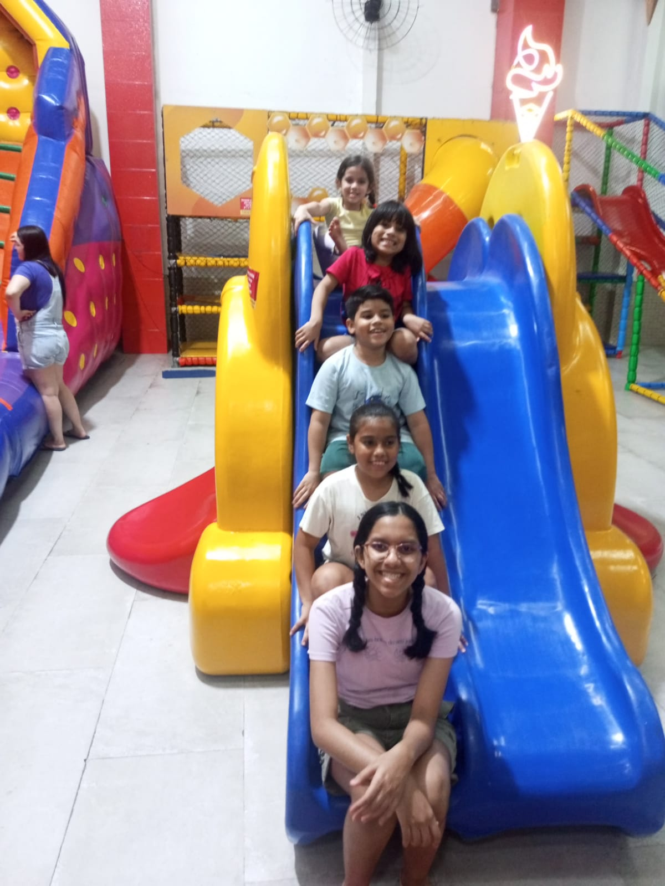
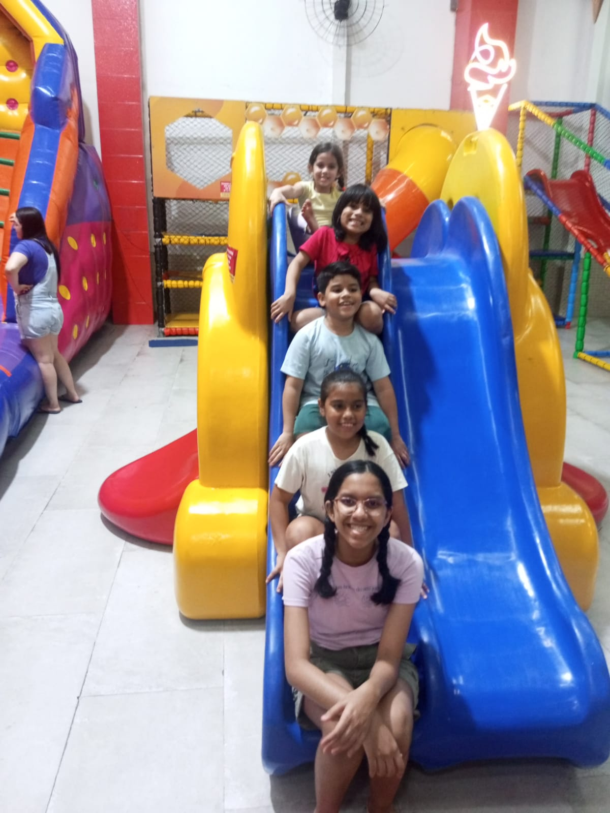
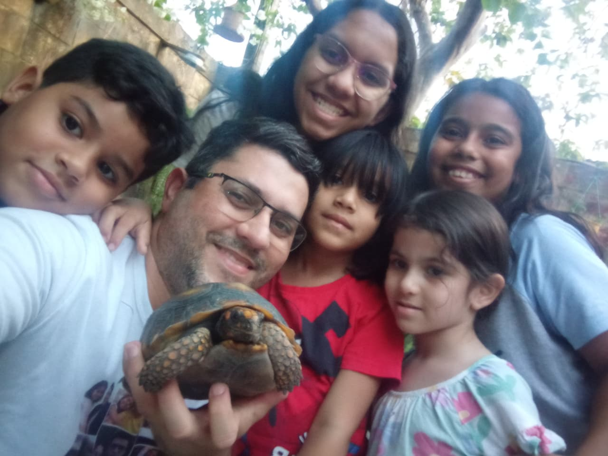
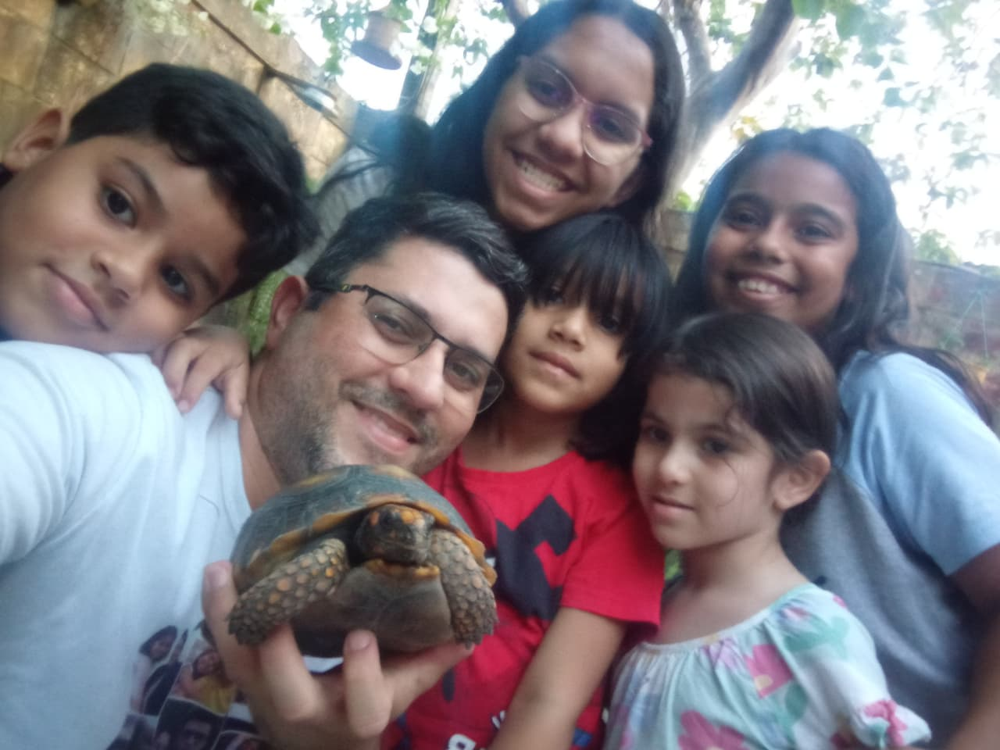

Capítulo 1 – Núcleo Familiar
A história recente da família Nascimento & Vale tem seu ponto de partida em Manaus, capital do Amazonas, cidade marcada por rios extensos, memórias profundas e laços familiares fortes. Foi nesse cenário que se formou o núcleo familiar responsável por manter vivas as tradições, os valores e as histórias herdadas de gerações anteriores. Em cada geração, a continuidade não depende apenas do sobrenome, mas da consciência de responsabilidade sobre aquilo que foi recebido. “Uma geração contará à outra as tuas obras.” Legado não se mantém por acaso; ele é transmitido intencionalmente.
Diego Vale do Nascimento nasceu em 16 de abril de 1987, em Manaus – AM. Desde cedo, sua vida foi moldada por duas grandes paixões que caminharam lado a lado: a música e a tecnologia. Tornou-se Músico e Especialista em Tecnologia da Informação, unindo sensibilidade artística e raciocínio técnico em sua trajetória profissional. Filho de Marialvo Rocha do Nascimento e Ana Ocarina Bentes do Vale, Diego cresceu cercado por histórias de trabalho árduo, fé constante e amor familiar, valores que influenciaram profundamente sua formação como homem, pai e profissional. Pela ordem natural das gerações, Diego representa a continuidade de um ciclo iniciado antes dele — herdeiro das linhagens Nascimento, Vale e Bentes, e elo entre passado e futuro. “Ensina a criança no caminho em que deve andar.” A formação do caráter começa muito antes da maturidade.
Ao longo de sua trajetória, Diego ampliou as heranças recebidas de seus antepassados. Além da música, tornou-se compositor de mais de cem canções gospel, instrumentista, cantor e produtor musical, dedicando sua arte à fé cristã. Formou-se em Teologia (nível médio) e passou a atuar como Pastor e Evangelista, assumindo também liderança espiritual. Paralelamente, consolidou carreira como Analista e Desenvolvedor de Sistemas e Especialista em Tecnologia da Informação. Ao longo da vida, também exerceu as profissões de motorista e vendedor, expressando versatilidade, espírito empreendedor e compromisso com o sustento familiar.
No convívio familiar, Diego sempre compartilhou a vida com sua irmã, Kamila Vale do Nascimento, Fisioterapeuta, nascida em 11 de maio de 1996. Kamila construiu sua própria história ao lado de Ataliba Alencar de Melo Júnior, nascido em 27 de maio de 1995, com quem formou uma família abençoada por três filhos, que representam a continuidade e a esperança das novas gerações:
- Ágata Nicole Nascimento Melo, nascida em 04 de outubro de 2015
- Matheus Heitor Nascimento Melo, nascido em 30 de dezembro de 2017
- Anthony Valentim Nascimento Melo, nascido em 22 de dezembro de 2019
Cada criança trouxe consigo novos capítulos, risos, desafios e sonhos, fortalecendo ainda mais os laços entre todos. A descendência revela que a árvore genealógica não é estática; ela cresce conforme as decisões da geração atual. “Os filhos são herança.” Herança exige preparo, direção e exemplo.
A história de Diego ganhou um novo sentido quando se uniu em casamento a Gisella Chirano do Nascimento, nascida em 11 de setembro de 1991, também em Manaus – AM. Gerente de Lojas, Gisella sempre demonstrou dedicação, organização e cuidado, características que se refletiram tanto em sua vida profissional quanto na construção do lar. Juntos, Diego e Gisella formaram um núcleo familiar fundamentado no respeito, na responsabilidade e no amor, valores transmitidos diariamente às gerações seguintes. Há alianças que não apenas unem duas pessoas, mas consolidam uma nova etapa geracional. “Melhor é serem dois do que um.” Construção sólida exige cooperação.
Dessa união nasceram duas filhas, que se tornaram o maior legado do casal:
- Rachel Chirano do Nascimento, nascida em 06 de dezembro de 2012, em Manaus – AM, estudante, cuja infância é marcada por aprendizados, descobertas e sonhos em formação.
- Sarah Chirano do Nascimento, nascida em 18 de março de 2022, também em Manaus – AM, trazendo ao lar a renovação da esperança, a alegria dos primeiros passos e a certeza de que a história da família continua a ser escrita.
Em Rachel e Sarah inicia-se uma nova etapa da linhagem — geração que receberá não apenas nome e memória, mas formação intencional, preparo intelectual e fundamento espiritual. “O justo anda na sua integridade; bem-aventurados serão os seus filhos depois dele.” A integridade dos pais torna-se segurança para os filhos.
Assim, o núcleo familiar Nascimento & Vale segue firme no tempo, entre memórias do passado, vivências do presente e a construção cuidadosa de um futuro onde a identidade, o amor e a fé permanecem como alicerces eternos. “Se o Senhor não edificar a casa, em vão trabalham os que a edificam.” Toda estrutura familiar precisa de fundamento para permanecer além das circunstâncias.
 Ana e Diego
Ana e Diego
 Ana, Diego, Kamila e Marialvo
Ana, Diego, Kamila e Marialvo
 Aniversário 3 anos de Sarah
Aniversário 3 anos de Sarah
 Aniversário de 10 anos da Ágata
Aniversário de 10 anos da Ágata
 Aniversário de 13 anos de Rachel
Aniversário de 13 anos de Rachel
 Ataliba, Kamila, Antony Ágata e Heitor
Ataliba, Kamila, Antony Ágata e Heitor
 Dia de Diversão
Dia de Diversão
 Diego e Marialvo em um Show
Diego e Marialvo em um Show
 Diego, Gisella, Sarah, Rachel e Ana
Diego, Gisella, Sarah, Rachel e Ana
 Diego, Marialvo e Marivelto

Escadinha
Escadinha
Diego, Marialvo e Marivelto

Escadinha
Escadinha
 Família na Ponta Negra
Família na Ponta Negra
 Presente da Vovó Ana
Presente da Vovó Ana
 Rachel na Praça da Polícia - Manaus
Rachel na Praça da Polícia - Manaus
 Rachel, Ágata, Heitor, Antony e Sarah
Rachel, Ágata, Heitor, Antony e Sarah
 Visita à Tia Valdira

Xiiiissss
Visita à Tia Valdira

Xiiiissss